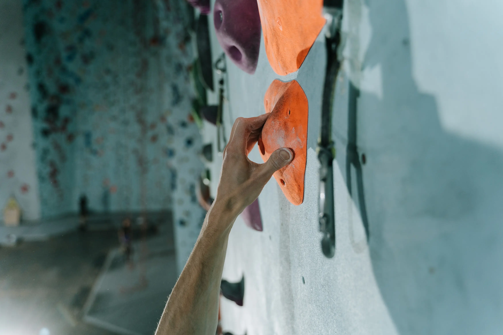

Trening Antagonistyczny Podczas Sezonu

Mnóstwo osób spędza bardzo dużo
czasu na wspinaniu w skałach lub częste
wyjazdy, przy dobrej pogodzie lub będąc blisko zrobienia naszego wymarzonego projektu ciężko jest się
zmotywować do
treningu. Szczególnie mając w głowie to, że jedna lub dwie sesje treningowe dużo nie zdziałają przy
naszym projekcie lub
przyszłym wyjeździe w skały.
Czasem warto popatrzyć w przyszłość i zobaczyć jak bardzo to przybliży nas do sukcesu, w większości
przypadków 5% zmienia 100%.
Dlaczego akurat taki trening?
Wspinając się dużo nasze ciało zaczyna być bardzo ograniczone na wybrane wzorce ruchowe co pomaga nam w naszych projektach ale może odbić się na naszą karierę wspinaczkową. Trenując mięśnie antagonistyczne zmniejszamy nierówność naszej siły.
Plusy Treningu Antagonistycznego
- Zmniejszone ryzyko kontuzji
- Zwiększona siłą
- Dobra postawa
- Utrzymanie zdrowia stawów
Ile razy w tygodniu
Na początku swojej przygody z treningiem warto budować obciążenie treningowe i objętość stopniowo. Mądrym krokiem jest zacząć od jednego treningu na tydzień, będąc bardziej zaawansowanym możemy zwiększyć to do 2 treningów co podczas sezonu wspinaczkowego spokojnie wystarczy.
Jak trenować?
- Stożek rotatorów, trening na TRX T's , Y's
- rapezius, prostym ćwiczeniem będzie Shoulder Press
- Triceps i klatka piersiowa, najbardziej znanym ćwiczeniem będzie pompka, bardziej zaawansowanym TRX Chest Flyes
- Prostownik przedramienia, zwijanie palców hantlom
Intensywność
Intensywność treningu powinna być umiarkowana ,szczególnie podczas sezonu, gdzie nie chcemy męczyć
naszego ciała
nadmiernie.
Dobrze jest zacząć od 2-4 serii 10-12 powtórzeń ćwiczenia z odpoczynkiem ok. 2-4 minuty pomiędzy.
Kiedy zrobić taki trening?
Najlepszym wyjściem będzie zrobić to po wspinaniu, bardzo ważne jest żeby mieć pełne dni odpoczynkowe pomiędzy naszymi wyjazdami w skały.